Geometry of neural representations
Reader-friendly version of the 57 lecture slides: the lecture content in normal flow, with figure descriptions and data tables where the figure carries data. Open the presentation.
Slide 1

Geometry of neural representations
Slide 2
Where we are
| Question it answered | The object it built | |
|---|---|---|
| Metrics | What is a data point? | coordinates, dot products, distances |
| MDS | How similar are these stimuli? | a dissimilarity matrix, and a map from it |
| PCA | What are the dominant axes? | the covariance's eigenvectors: a flat subspace |
| Isomap, t-SNE, UMAP | What if the surface is curved? | intrinsic vs embedding dimension, object manifolds |
| Today | What shape is the cloud? What can a readout do with it? Does it match another cloud? | the same objects, no new data: the population itself, not a picture of it |
Given only a response matrix, what can we say about a representation? And how would we know that two representations match?
Slide 3
How many dimensions does a population use?
Slide 4
Two dual views of the same matrix
![Three panels computed from a toy response matrix of 12 stimuli from three categories and 5 neurons. Left, the matrix as a heatmap with stimulus A1's row and neuron 1's column outlined. Middle, stimulus space: each stimulus is a point placed by its responses in neurons 1 and 2, and the three categories form three separate clusters, with A1 circled. Right, neuron space: each neuron is a point placed by its responses to stimuli A1 and B1; neuron 1 sits high on A1 and low on B1, neuron 2 the reverse, and neuron 4, which responds to both categories, sits high on both](../images/L05/19_dual_views.svg)
Three panels computed from a toy response matrix of 12 stimuli from three categories and 5 neurons. Left, the matrix as a heatmap with stimulus A1's row and neuron 1's column outlined. Middle, stimulus space: each stimulus is a point placed by its responses in neurons 1 and 2, and the three categories form three separate clusters, with A1 circled. Right, neuron space: each neuron is a point placed by its responses to stimuli A1 and B1; neuron 1 sits high on A1 and low on B1, neuron 2 the reverse, and neuron 4, which responds to both categories, sits high on both
Open full-size figure- Stimulus space (rows as points, our reading so far): the representational geometry. Neuron space (columns as points, one axis per stimulus): each neuron's tuning curve
- Same matrix, transposed: one SVD gives both. Tuning and geometry are two descriptions of one thing
Slide 5
Three counts of dimension, and one more
- Last lecture's three counts, inside a language model: in GPT-2, days and months lie on circles. Intrinsic 1, embedding 2, ambient 768

Two panels from the language model GPT-2-small, layer 7, projected on principal axes 2 and 3. Left, the representations of the seven days of the week form a ring of colored clusters in calendar order, Monday to Sunday. Right, the twelve months form a ring in calendar order, January to December
Open full-size figure- The rank, the number of directions the points span, is a poor fourth count: with noise, stimuli fill all directions they can. What differs is how much variance each one gets
Slide 6
How big is the cloud? The eigenspectrum of V1
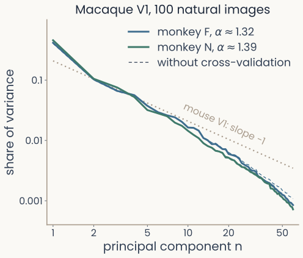
Log-log plot of share of variance against principal component number, 1 to 60, for V1 in two macaque monkeys viewing 100 natural images. Both spectra fall along nearly straight lines with power-law exponents of about 1.32 and 1.39, a little steeper than a dotted line of slope minus 1 labeled mouse V1. Thin dashed lines without cross-validation lie almost on top of the solid ones
Open full-size figure
- The PCA lecture's scree plot, on log-log axes. Stringer et al. imaged ~10,000 neurons in mouse V1 (early visual cortex) viewing ~2,800 natural images
- No elbow. A straight line: a power law , with just above 1
- Monkey V1 on 100 images (left): again a straight line, a little steeper
- A slower decay than would spread variance over more dimensions, but then small changes to an image could cause large jumps in the response
V1 spreads its variance over many dimensions, but no more than a smooth code allows.
Slide 7
Do two people use the same dimensions?
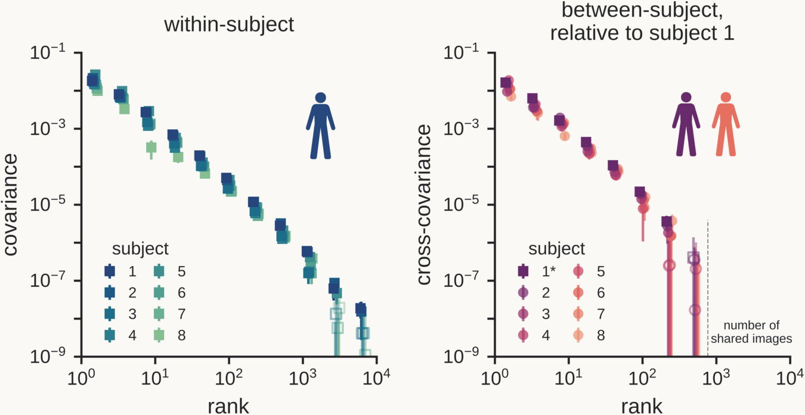
Two log-log plots from human fMRI. Left, within-subject: for eight people, covariance falls along the same straight line against component number, from 1 to about 5,000, with no elbow. Right, between-subject relative to subject 1: after each other person's responses are rotated to line up with subject 1's, their cross-covariance along subject 1's dimensions falls along the same power law up to a few hundred components, the number of images all subjects saw
Open full-size figure
- Human visual cortex (fMRI): again a power law, no elbow, over thousands of components
- Aligned by a rotation, two brains share the same power law, hundreds of dimensions deep
Slide 8
Does a deep network do the same?
![Log-log plot of the share of variance carried by each principal component against its number n, for six networks' responses to 1,854 THINGS images, with a dotted reference line of slope minus 1, the power law found in mouse V1. Five trained networks have gently falling curves with fitted exponents between about 0.67 and 0.96, at or a little flatter than the reference; the untrained ResNet-18, dashed, starts with one component holding most of the variance and then falls much more steeply, exponent 1.43](../images/L05/22_network_eigenspectra.svg)
Log-log plot of the share of variance carried by each principal component against its number n, for six networks' responses to 1,854 THINGS images, with a dotted reference line of slope minus 1, the power law found in mouse V1. Five trained networks have gently falling curves with fitted exponents between about 0.67 and 0.96, at or a little flatter than the reference; the untrained ResNet-18, dashed, starts with one component holding most of the variance and then falls much more steeply, exponent 1.43
Open full-size figure- Why care: in published tests, networks with spectra flatter than V1's are easier to fool with tiny image changes
Slide 9
Putting a number on it: effective dimensionality
- Noise gives every direction some variance. We need a soft count: effective dimensionality
- 100 neurons that all echo one signal fill one direction. 100 that each have their own signal fill 100. A trained network's 512 units fill about 99
- The participation ratio turns an eigenspectrum into that count:
- One eigenvalue: PR = 1. equal eigenvalues: PR = . No threshold, no elbow
- As PCA does, it depends on each unit's scale: z-scoring units first is a choice, not a default
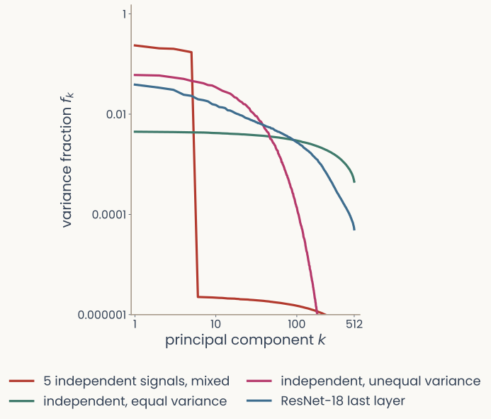
Three eigenspectra, first 40 principal components each. Top, 100 model neurons that echo one signal: a single bar, participation ratio 1. Middle, 100 neurons that each carry their own signal: 40 bars of almost equal height, participation ratio 98. Bottom, a trained ResNet-18's 512-unit last layer on 1,854 THINGS images: bars that fall smoothly, participation ratio 99
Open full-size figure
Slide 10
What can a linear readout do with the cloud?
Slide 11
A linear readout draws a hyperplane

A 2-D plane with axes x1 and x2 holding two clouds of dots, green "yes" points upper right and blue "no" points lower left. A fitted straight line runs between them and the two sides are lightly shaded. A magenta arrow labelled w starts on the line at a right angle and points into the green side. A dotted segment from one green point to the line is labelled distance = confidence
Open full-size figure- Last lecture, untangled objects could be split by a flat boundary, a hyperplane. A downstream neuron draws one: it computes (weights , bias ) and answers "yes" when it is positive, a linear readout. The hyperplane is where
- is perpendicular to the hyperplane and points to the "yes" side. The farther a point lies from it, the more confident the answer
- Fit on some stimuli, a readout becomes a measurement of the others
Slide 12
A readout as a measurement
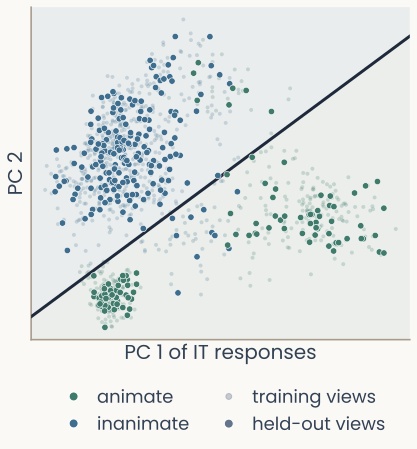
Monkey IT responses to the 1,224 object images on their first two principal components. Green dots are animate images (animals and faces), blue dots inanimate ones; faint dots are training views and solid dots held-out views. A straight line fitted on the training views separates most held-out animate images from inanimate ones
Open full-size figure
- Fit the weights on training stimuli, then score the readout on held-out stimuli (the test set). Even the z-scoring uses the training stimuli's mean and SD
- Monkey IT, two principal components only: a line fitted on 18 views per object classifies 94% of new views as animate or inanimate. Always guessing "inanimate" gives 63%, the majority-class baseline
- A readout used to test what a representation makes available is a probe
- Animate or not is one way to split the objects in two. For some splits, no line works
Slide 13
Draw the line yourself

The readout demo with the fitted line: training views 92 percent correct, held-out views 94 percent, against a majority-class baseline of 63 percent
Open full-size figureSlide 14
When no line works, add a unit that mixes
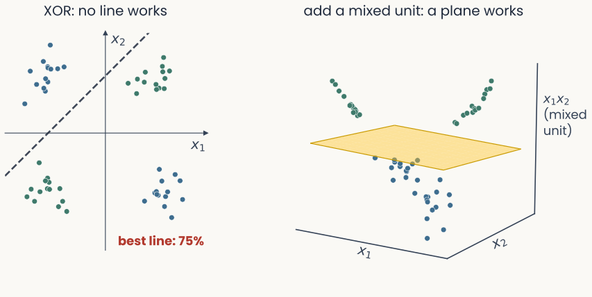
Left, titled XOR: no line works: four clusters at the corners of a square, green upper right and lower left, blue upper left and lower right; the best line gets 75 percent. Right, titled add a mixed unit: a plane works: the same points in 3-D with a third axis x1 times x2; the green clusters rise above a translucent gold plane and the blue ones drop below it
Open full-size figure
- Linearly separable: one hyperplane puts the two classes on opposite sides. XOR is not
- A unit that responds to the combination lifts the points into 3-D, where one plane works
Slide 15
One neuron, many variables
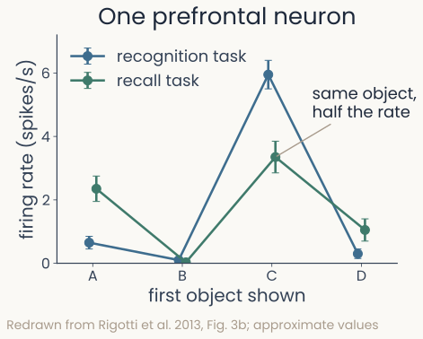
Firing rate of one monkey prefrontal neuron for four objects shown first, in two tasks. The two lines are not parallel: object C drives about 6 spikes per second in the recognition task but about 3.4 in the recall task, while object A drives more firing in recall than in recognition
Open full-size figure
- A neuron in monkey prefrontal cortex, recorded while the monkey remembered a sequence of objects in two tasks
- It prefers object C, but how much depends on the task: the lines are not parallel. Its response is a nonlinear combination of object and task: nonlinear mixed selectivity
- Most prefrontal neurons are like this
Slide 16
Mixing makes the population high-dimensional
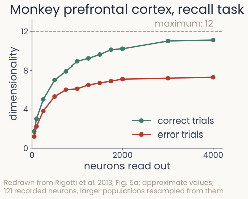
Dimensionality of monkey prefrontal activity against the number of neurons read out: it rises and levels off near the maximum of 12 on correct trials and near 7 on error trials
Open full-size figure
- With conditions there are ways to assign them to two classes. Shattering dimensionality: how many of these two-class tasks a linear readout can solve, counted in dimensions ( of the count, at most )
- On correct trials, monkey prefrontal cortex comes close to the maximum. A population of pure neurons could not
- On error trials it collapses, although the objects can still be decoded
- Each condition here is one point. Real conditions are clouds of trials or views
Slide 17
A condition is a cloud with a size and a shape
![Two panels. Left, one manifold: a blue cloud of sampled points longer in one direction than the other, with its center marked, a dashed arrow from the origin to the center, a dotted circle and arrow for its radius, the mean distance of the points from the center, and two arrows along its spread directions, dimension 2. Right, a line plot of the share of two-class tasks a linear readout solves against manifolds per unit: single points stay separable up to about 2 per unit, small manifolds fall through one half near 0.75, large manifolds near 0.33](../images/L05/20_manifold_geometry.svg)
Two panels. Left, one manifold: a blue cloud of sampled points longer in one direction than the other, with its center marked, a dashed arrow from the origin to the center, a dotted circle and arrow for its radius, the mean distance of the points from the center, and two arrows along its spread directions, dimension 2. Right, a line plot of the share of two-class tasks a linear readout solves against manifolds per unit: single points stay separable up to about 2 per unit, small manifolds fall through one half near 0.75, large manifolds near 0.33
Open full-size figure- Last lecture: tangled or untangled. Now we measure it. One object's views form a cloud with a radius (mean distance from its center) and a dimension
- The bigger the clouds, the fewer of them a linear readout can separate
Slide 18
How big are the clouds? Identity and viewpoint
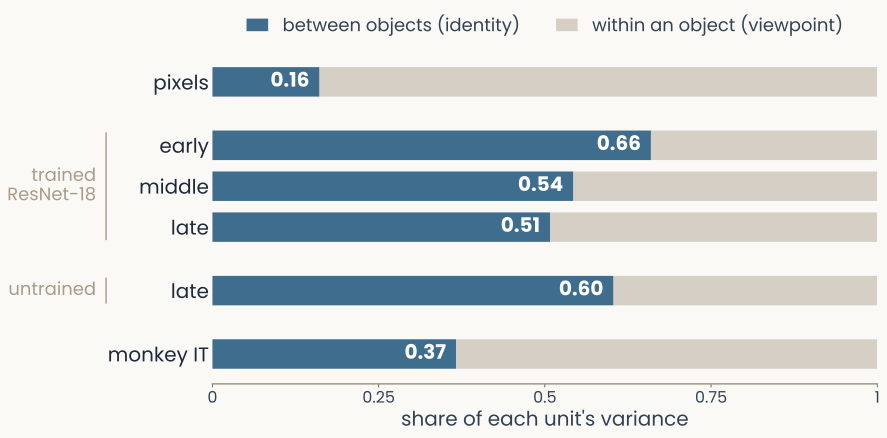
Horizontal stacked bars, one per representation of the 1,224 object images. Each bar splits a unit's variance into a between-objects part (identity, dark) and a within-object part (viewpoint, light). Pixels 0.16 between; trained ResNet-18 early 0.66, middle 0.54, late 0.51; untrained ResNet-18 late 0.60; monkey IT 0.37
Open full-size figure
- Pixels: mostly within an object (viewpoint). Networks: mostly between objects (identity). IT keeps much of the viewpoint. Small clouds do not prove invariance: the untrained network's are smaller than the trained one's
Slide 19
A readout must also generalize: CCGP
- Train a readout for "animal or not" on dogs and chairs. Test it on cats and tables. If it still works, the variable is coded the same way across conditions: abstract
- Cross-condition generalization performance (CCGP): accuracy of a readout trained on some conditions and tested on conditions it never saw
- The simplest geometry that does this: each variable is one consistent direction, so the conditions sit near the corners of a low-dimensional cube
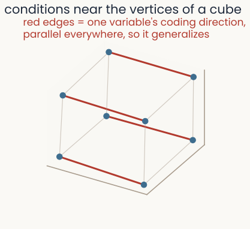
Eight conditions sitting near the vertices of a cube, with one variable's coding direction drawn as parallel red edges, parallel everywhere, so a readout trained on one face generalizes to the other
Open full-size figure
Slide 20
The same populations do both
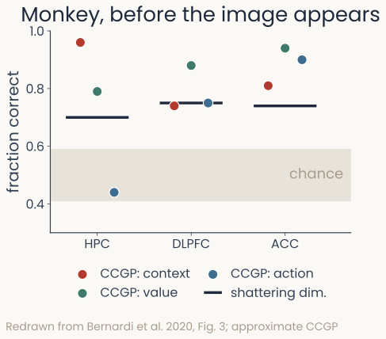
For monkey hippocampus, DLPFC and ACC: shattering dimensionality of about 0.70 to 0.75 as bars, well above a chance band near 0.5; CCGP for context, value and previous action as dots, well above chance except action in the hippocampus
Open full-size figure
- Shattering and CCGP pull in opposite directions: separating everything, or generalizing along a few consistent directions
- Yet in monkey hippocampus and prefrontal cortex, the same neurons score high on both
- Shattering as an accuracy: fit a readout for each two-class split, average its held-out accuracy (chance 0.5). Too many splits? Draw some at random
- The geometry is neither a random cloud nor a clean cube. It is a compromise
Slide 21
Abstraction appears with inference, in humans
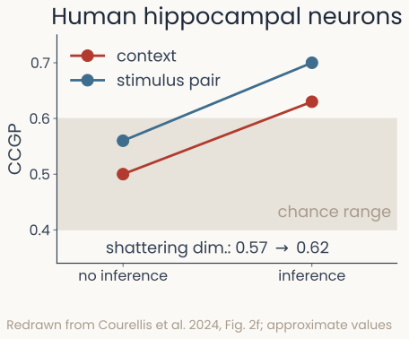
In human hippocampal neurons, cross-condition generalization for context and for stimulus pair sits at chance in sessions where patients could not infer the hidden context, and rises above chance in sessions where they could; shattering dimensionality rises slightly, from 0.57 to 0.62
Open full-size figure
- Single neurons recorded in epilepsy patients doing a task with a hidden context
- In sessions where patients could not infer the context, CCGP for context sat at chance. Where they could, it rose
- Shattering rose only slightly. What came with understanding was the abstract format
Slide 22
Does a deep network see objects the way IT does?

Two maps of the same 51 objects made by multidimensional scaling, one from monkey IT recordings (481 sites) and one from a trained ResNet-18's late layer (512 units). Dots are colored by category, and six objects are shown as small pictures in both maps: two human heads, a cat, a car, a house and bananas. The maps are rotated relative to each other, but the grouping is the same: the two heads sit together, animals cluster apart from vehicles, and the house lies near the vehicles in both
Open full-size figure- We cannot match IT site 17 to network unit 17. But we can ask whether both put the same objects close together
Slide 23
Why not just compare behavior?
The smallest possible network: one input, one hidden unit (a unit between input and output), one output:
The function depends only on the product .
The representation depends on only.
| for | for | |||
|---|---|---|---|---|
| net A | 1 | 2 | 2 | 1 |
| net B | 2 | 1 | 2 | 2 |
Identical behavior on every input. Hidden activity differs by a factor of two, and we could make it a factor of a thousand.
Same function, different representation. It follows from the algebra, so no amount of behavioral data could tell these two networks apart. We have to compare the representations themselves.
Slide 24
Put a number on the match: RSA
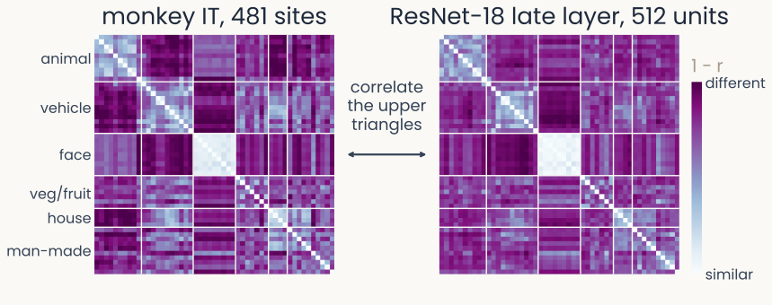
Two 51 by 51 dissimilarity matrices for the same objects in the same category order, from monkey IT (left) and ResNet-18's late layer (right). Both show a light block for faces and lighter blocks within animals and within vehicles, and faces are strongly different from vehicles in both. An arrow between the matrices reads correlate the upper triangles
Open full-size figure
- The similarity lecture's RSA, now between two systems: one RDM each, then the Spearman correlation of their upper triangles
- The units are gone, so 481 sites and 512 units become comparable. The price: RSA only sees distances
Slide 25
An alternative to RSA: CKA
- Instead of distances, compare dot products between stimuli, magnitudes included
- Centered kernel alignment (CKA) for centered and (same stimuli in the same order, any numbers of units):
- : square root of the sum of squared entries. CKA is 1 when the two differ only by a rotation and an overall rescaling
- Sanity check: two networks of different depths match best at the same relative depth

Heatmap of linear CKA between every block of an ImageNet-trained ResNet-18 (x axis, stem and blocks 1 to 8) and ResNet-50 (y axis, stem and blocks 1 to 16), measured on 1,854 THINGS images. A dark band runs from bottom-left to top-right: each ResNet-18 block is most similar to the ResNet-50 block at the same relative depth, marked by gold rings (CKA 0.74 to 0.99), and early-versus-late pairs are least similar (down to 0.16)
Open full-size figureSlide 26
RSA or CKA?
| RSA | CKA | |
|---|---|---|
| Compares | the order of the distances between stimuli | dot products between stimuli, magnitudes included |
| Assumes, ignores | a distance you choose, and only its ranks | linear, and ignores rotation and overall scale |
| Better at | any data: neurons, fMRI, behavior | using magnitudes, matching network layers |
| Worse at | depends on the distance, noisy with few stimuli | a few big directions dominate, can be high for unrelated data |
| IT vs network | 0.73 | 0.82 |
- Neither score is a percentage of shared information. Is 0.82 high? We need something to compare it to
Slide 27
Other comparisons you will meet in papers
- Linear predictivity (encoding models, Brain-Score): fit a linear map from the network's units to each neuron and score its predictions on held-out images. Can each neuron be rebuilt from the network?
- CCA and SVCCA: find the directions in the two representations that are most correlated with each other. Do they share some directions?
- Procrustes and shape metrics: rotate one representation to line it up with the other as well as possible, and measure what is left. How far apart are the two shapes? A true distance
- Decoding transfer: train a readout on one representation and test it on the other. Do the same readouts work in both?
- Whatever the measure, a score needs a reference. What would it give for two representations that share nothing?
Slide 28
Is a score above chance? Shuffle the stimuli
- Two people rate the same 100 movies. Shuffle which movie each of one person's ratings belongs to. Any agreement left cannot come from the movies
- Shuffle baseline: shuffle the stimulus order of one representation, so that row no longer describes the same image in both, and recompute the score. Repeat many times, e.g. 1,000
- The real score counts only if it lies above nearly all the shuffled scores, e.g. above their 95th percentile. This is a permutation test
- IT vs the network: RSA 0.73 against a shuffled 95th percentile of 0.05. CKA 0.82 against 0.25
- If the shuffled scores are far from zero, the measure responds to something other than the match between stimuli
Slide 29
With few stimuli, any two representations look alike

Two line plots of the similarity between CLIP and DINOv2 on random subsets of 10 to 1,000 THINGS images, number of stimuli on a log axis. Left, linear CKA: with 10 stimuli the real pairing is 0.96, shuffled stimuli 0.93 and random data of the same size 0.98; as stimuli are added, shuffled CKA falls to 0.11 and random-data CKA to 0.38, while the real pairing falls more slowly to 0.55. Right, RSA on the same subsets: the real pairing stays near 0.35 at every size, while shuffled RSA stays at 0
Open full-size figure- With far more units than stimuli, every stimulus can be nearly perpendicular to every other, as random vectors are. Then the pairing hardly matters, and shuffled CKA stays high
- Do all large networks converge on one representation? Huh et al. said yes. With a shuffle baseline, much of that convergence disappears (Gröger et al.)
Slide 30
How high could a score go? The noise ceiling
- The first lecture's split-half reliability: score the average of half the repeats against the other half with the same measure, over several random splits
- A network responds the same way every time, so only the recording's noise caps its score: the noise ceiling of the similarity lecture. A reference, not a hard bound
- Report a model between references: the shuffle floor below, the noise ceiling above, and the same area in another brain
- Human IT (fMRI): every network sits between floor and ceiling. Another person's IT reaches the ceiling

Horizontal bars of RSA between six networks and one person's IT measured with fMRI, 100 THINGS images: ResNet-50 0.19, DINOv2 0.18, CLIP 0.17, ResNet-18 0.17, ResNet-50 DINO 0.16, untrained ResNet-18 0.06. A grey shuffle floor near 0.02 sits behind the bars; a dashed line for another person at 0.24 and a dotted split-half noise ceiling at 0.24 lie to the right of all bars
Open full-size figureSlide 31
Would the result hold for other stimuli? Resample
- A score is measured on one set of stimuli. Another set from the same pool gives a different score
- Bootstrap over stimuli: draw stimuli with replacement, drop the pairs of a stimulus with its own copy, recompute every model's score, repeat many times
- Count how often each model comes first. On the same fMRI data, the top network wins only about half the time
- An unstable ranking calls for different stimuli, chosen so that the models disagree

Top: overlapping bootstrap distributions of RSA with human IT for six networks, the trained ones all spanning roughly 0.11 to 0.25 and the untrained one near 0.06. Bottom: across 1,000 resamples of the 100 images, ResNet-50 ranks first in 55 percent, DINOv2 in 16 percent, CLIP in 18 percent, ResNet-18 in 8 percent, ResNet-50 DINO in 4 percent and the untrained network in 0 percent
Open full-size figureSlide 32
Different measures, different winners
- Rank seven networks by how much they look like monkey IT, on the same 51 objects
- Change only the measure, and the winner changes. RSA puts CLIP first. CKA and a Procrustes distance agree on the whole order, with ResNet-18 first
- The top places are near-ties, so small differences in what each measure ignores reorder them
- Soni et al. find the same across measures, datasets and model families

Slope plot ranking seven networks by similarity to monkey IT under three measures. CKA and Procrustes give the same order, led by ResNet-18, ResNet-50 and CLIP, but RSA puts CLIP first and ResNet-50 fourth. The untrained ResNet-18 is last under all three
Open full-size figureSlide 33
Tied on natural images, split on designed ones
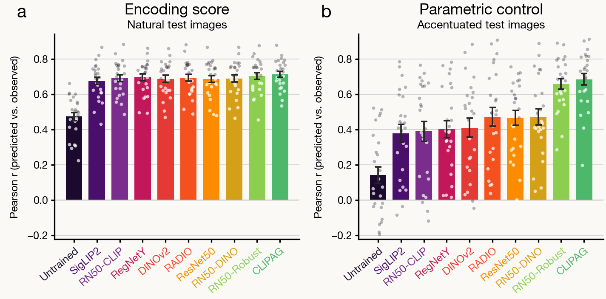
Two bar charts for ten neural-network models of macaque visual cortex. Left, a, encoding score on natural test images: every trained model predicts the neurons almost equally well, Pearson r about 0.67 to 0.71, the untrained model 0.47. Right, b, parametric control on images each model synthesized to drive the neurons: the same models spread apart, about 0.38 to 0.47 for most, 0.66 to 0.68 for the two adversarially trained models, 0.14 for the untrained one
Open full-size figure
- Nine trained models: equal on natural images, split on images each designed to drive neurons
- To tell models apart, choose stimuli on which they disagree
Slide 34
Recap
- A population response is a cloud of points. Its eigenspectrum and participation ratio say how many directions it fills. V1 fills many, but no more than a smooth code allows. Trained networks spread theirs a little further
- A linear readout is a hyperplane. Shattering counts the two-class tasks it can solve. CCGP asks whether it generalizes to new conditions. Mixed selectivity raises the first, abstraction the second, and cortex does both
- To compare a network with IT, compare how each arranges the objects: RSA with distances, CKA with dot products
- A score needs references: a shuffle floor, a noise ceiling, resampled stimuli, and more than one measure
Slide 35
Geometry is a description.
What computes it?
Everything so far · Everything after
Slide 36
Further reading for the research trail
- Reviews: Chung & Abbott, Neural population geometry (2021) · Kriegeskorte & Wei, Neural tuning and representational geometry (2021)
- Research-trail options: Rigotti et al., mixed selectivity (2013) · Bernardi et al., the geometry of abstraction (2020) · Kornblith et al., CKA (2019) · Golan, Raju & Kriegeskorte, controversial stimuli (2020) · Chen & Bonner, universal dimensions of visual representation (2025) · O'Neill et al., amygdala geometry (2026) · Huh et al., the platonic representation hypothesis (2024)
- Optional: Soni et al., metrics disagree (2024) · Cohen et al., object manifolds in deep networks (2020) · Gröger et al., an Aristotelian view (2026)
The paper you select for your research trail is required. The other papers are optional.
Slide 37
Minute paper
Submit on Canvas → Minute papers → Minute Paper 6 (access code read out in class).
Write three brief points in your own words:
- Two representations have a CKA of 0.8. Name one check you would run before calling them alike, and what it would tell you.
- Something you do not yet understand, or a question still open
- Another idea you found interesting, and why it matters for brains, behavior or AI
Credit for a thoughtful attempt, not for being correct.
Slide 38
Appendix: derivations and extra examples
Material not covered in class, for reference
Slide 39
Localist and distributed population codes
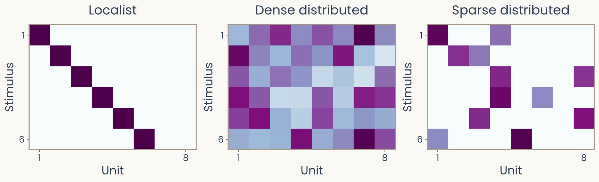
Illustrative matrices for six stimuli and eight units: localist has one active unit per item; dense uses all units; sparse uses two units per item
Open full-size figure| Localist | Dense distributed | Sparse distributed |
|---|---|---|
| One unit identifies an item | Many units contribute to each item | A small subset contributes to each item |
Slide 40
Shared dimensions need a functional alignment
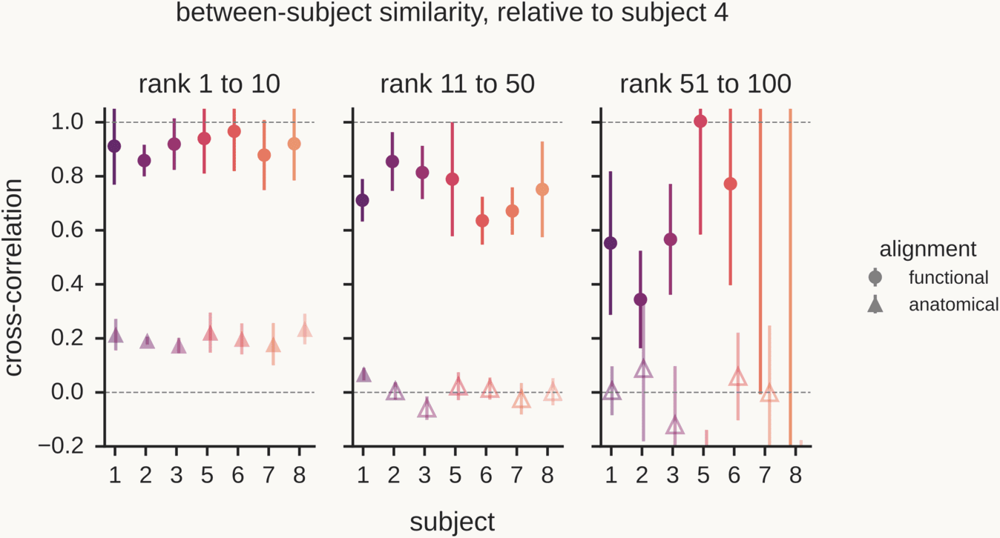
Between-subject similarity relative to subject 4, in three panels for components 1 to 10, 11 to 50 and 51 to 100: with functional alignment the cross-correlation with each other subject stays high, near 0.9 for the first ten and 0.6 to 0.85 for components 11 to 50; with anatomical alignment it is near 0.2 for the first ten and near 0 beyond
Open full-size figure
- Align two brains by anatomy and only the first ten dimensions are shared; align them by function and far more are
Slide 41
Effective dimensionality from an eigenspectrum
import numpy as np
# X: (N stimuli, D units) response matrix -- neurons, voxels, or model units
Xc = X - X.mean(axis=0, keepdims=True) # center: PCA needs it (the PCA lecture)
# eigenvalues of the covariance = squared singular values of the centered data
s = np.linalg.svd(Xc, compute_uv=False)
lam = s**2 / (Xc.shape[0] - 1) # the PCA eigenspectrum
pr = lam.sum()**2 / (lam**2).sum() # participation ratio
print(f"ambient D = {X.shape[1]}, effective dimensionality = {pr:.1f}")
# the power-law exponent Stringer et al. report: slope of log(lam) vs log(n)
n = np.arange(1, len(lam) + 1) # component number
alpha = -np.polyfit(np.log(n[1:500]), np.log(lam[1:500]), 1)[0]
print(f"spectrum decays as n^-{alpha:.2f}")
Slide 42
Careful: dimensionality is estimated, not observed
- You never see the true spectrum, you see it through finite trials, finite neurons, and measurement noise
- Noise inflates small eigenvalues and shrinks large ones: the measured spectrum is flatter than the truth, which biases dimensionality upward
- Pospisil & Pillow revisit exactly the Stringer analysis with bias-corrected estimators and reach different quantitative conclusions about the exponent
- The qualitative story (high-dimensional, no elbow) survives; the number is fragile
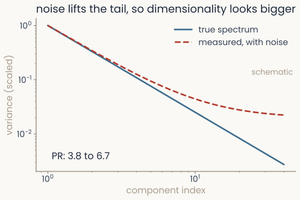
A true eigenspectrum falling as a straight line on log-log axes while the measured, noisy spectrum bends upward in the tail, inflating the participation ratio
Open full-size figure
Slide 43
Between and within variance, worked by hand
For equal numbers of views per object:
- Within: average variation around each object's mean.
- Between: variation of object means around the overall mean.
- Example: total . Within ; between .
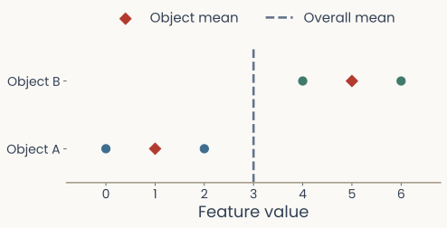
Two objects with feature values zero and two versus four and six, object means one and five, and overall mean three
Open full-size figure
Slide 44
Abstraction fails on error trials
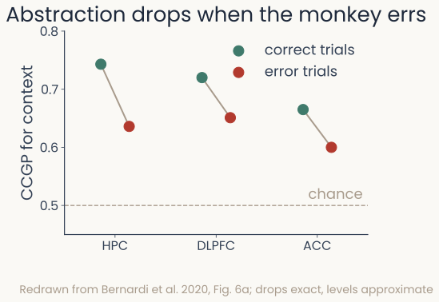
Paired dots for correct and error trials in monkey hippocampus, DLPFC and ACC: cross-condition generalization for context drops on error trials in all three areas, by about 0.07 to 0.11
Open full-size figure
- CCGP for context drops on error trials in all three areas
- Ordinary decoding of context does not drop
- What tracks behavior is the abstract format, not the information
Slide 45
Reading one variable without reading the others
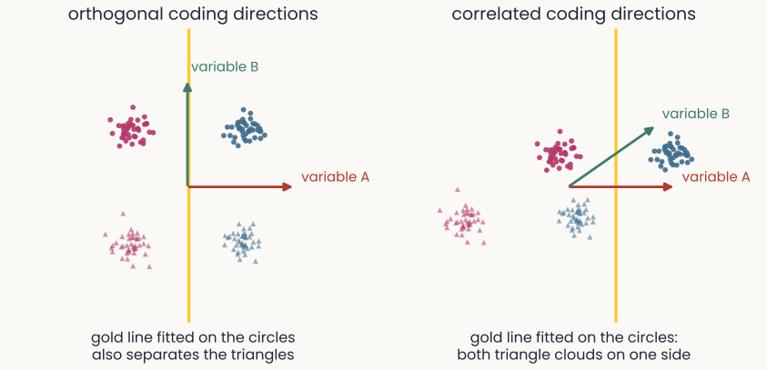
CCGP protocol drawn out: a boundary fitted on the circle conditions still separates the held-out triangles when the two coding directions are orthogonal, but fails when they are correlated
Open full-size figure
- Orthogonal directions → no cross-variable interference. Correlated directions → the boundary learned in one context is wrong in the next
Neurons that are individually mixed can still give a population that reads out one variable at a time.
Slide 46
The price of abstraction: the binding problem
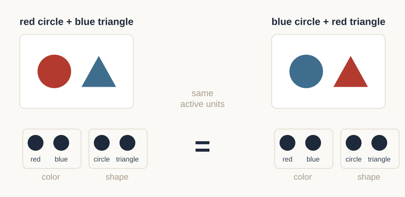
Two displays, a red circle with a blue triangle and a blue circle with a red triangle, activate exactly the same color units and the same shape units
Open full-size figure
- A factorized code gives color and shape their own directions, which is what lets it generalize to new combinations
- With two objects present, both displays turn on the same units: the code no longer says which color goes with which shape
Slide 47
Geometry predicts behavior
- Episodic memory. Sheng et al. find that higher-dimensional neural representations during encoding predict better subsequent memory: the geometry is measured in the brain, the outcome is measured in behavior
- Few-shot concept learning. Sorscher, Ganguli & Sompolinsky derive how many examples a learner needs from the geometry of the underlying manifolds, and the theory tracks human few-shot performance
- Model quality. Elmoznino & Bonner report that models with higher latent dimensionality tend to predict visual cortex better
The shape of a representation is tied to what the system can do.
Slide 48
Same images, two representations
Two scatter plots. Left, in pixel coordinates, the distance between two photographs plotted against how dissimilar people judged them: a formless cloud with a flat median line and a rank correlation of 0.01. Right, in the late layer of a trained network, the same plot rises clearly, rank correlation 0.42
Open full-size figure
- Every pair: how far apart the two images are, against how dissimilar people judged them.
- In pixel coordinates there is almost no monotonic association, . In a trained network's late layer, .
- Same images, same measure. What changed is the representation.
Slide 49
CKA between two response matrices
import numpy as np
def linear_cka(X, Y):
"""X: (N, d1), Y: (N, d2) -- same N stimuli, in the SAME ORDER.
d1 and d2 need not match: that is the whole point."""
X = X - X.mean(axis=0, keepdims=True) # center the units
Y = Y - Y.mean(axis=0, keepdims=True)
num = np.linalg.norm(Y.T @ X, ord="fro") ** 2
den = (np.linalg.norm(X.T @ X, ord="fro")
* np.linalg.norm(Y.T @ Y, ord="fro"))
return num / den
cka = linear_cka(it_neurons, net_layer) # monkey IT vs. a network layer
print(f"CKA = {cka:.3f}") # 1.0 = identical up to rotation+scale
- Centering is not optional, uncentered CKA is dominated by the mean response and reports ~1 for almost anything
Slide 50
CCA and its variants
- CCA finds the pair of directions maximizing , then the next pair whose canonical variates are uncorrelated with earlier pairs, and so on. The canonical correlations summarize the shared structure
- Invariance: any invertible linear transformation of either representation
- SVCCA (Raghu et al.) first projects onto the top singular directions to drop the noise-dominated tail, then runs CCA, enough to track how layers evolve over training
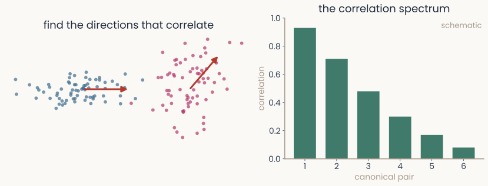
Two point clouds with an arrow marking the best-correlated direction found in each, next to the bar chart of declining canonical correlations
Open full-size figure
Slide 51
Shape metrics
- RSA and CKA give a score, not a distance, they can violate the triangle inequality, so "A is closer to B than to C" need not mean anything
- Williams et al. fix this: declare your invariance group , then define
- With orthogonal this is Procrustes distance: rotations and reflections preserve every distance (the metric lecture's isometries), so what is left is what no change of coordinates can explain
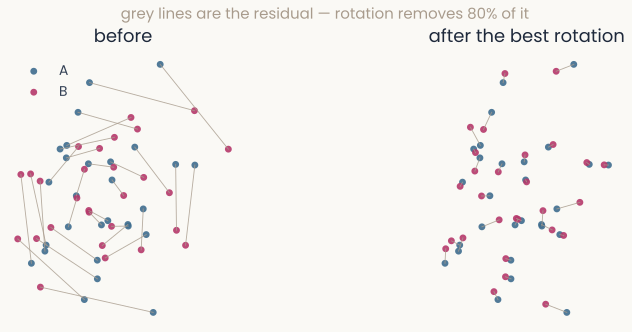
Two point clouds joined by long residual lines before alignment, and the same clouds after the best rotation with most of the residual gone
Open full-size figure
Slide 52
Comparison measures and what each ignores
| Measure | Invariant to | Needs ? | A proper metric? |
|---|---|---|---|
| RSA (RDM correlation) | isometries; scale (rank-based: monotone maps) | no | no |
| CCA | any invertible linear map | no | no |
| SVCCA / PWCCA | invertible linear, after truncation / reweighting | no | no |
| CKA (linear) | orthogonal + isotropic scale | no | no |
| Procrustes / shape metrics | whatever group you declare | no | yes |
- The measures differ mainly in how much they agree to ignore
Slide 53
Random directions become nearly perpendicular
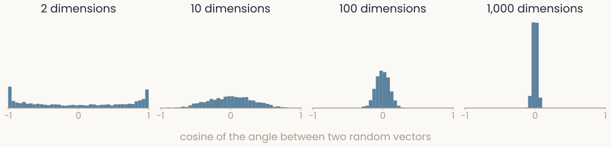
Four histograms of the cosine between two random vectors, for 2, 10, 100 and 1,000 dimensions. In 2 dimensions the cosines spread from -1 to 1; as the dimension grows they pile up ever more tightly around 0, so almost every pair is close to perpendicular
Open full-size figure
- Draw two random directions. In 2-D they can point anywhere. In 1,000-D they are almost always nearly perpendicular: the average |cosine| falls from 0.65 to 0.025, roughly as
- This is one face of the curse of dimensionality: with many dimensions and few samples, every sample looks about equally far from every other
Slide 54
Brains are noisy, networks are not
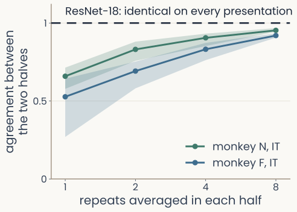
Line plot of how well two separate halves of a monkey's IT recordings agree, measured by CKA from 0 to 1, as more repeats are averaged in each half, 1, 2, 4, 8 and 15. With one repeat per half, agreement is about 0.5 for monkey F and about 0.7 for monkey N, with a wide spread across random splits; both curves rise steadily toward 1 and the spread narrows. A dashed line at exactly 1 shows ResNet-18, which gives identical activations every time an image is shown
Open full-size figure
- The same 100 images, shown 30 times to two monkeys: IT responds differently on every presentation
- Average more repeats in each of two halves, and the two averages agree better
- A network gives the same response every time. Noise limits how high any model can score against a recording
Slide 55
More features than units

Two circles of directions: two perpendicular feature directions where each unit means one thing, versus seven directions packed into the same plane, forced to overlap
Open full-size figure- Give every feature its own perpendicular direction and units hold at most features
- Accept roughly perpendicular directions and far more fit, in high dimensions, very many more. Each unit then sits on several of them
A population can code more features than it has units, and then no single unit stands for one thing.
Slide 56
Limits of similarity measures
- CKA is not always reliable. Davari et al. show CKA scores can be driven by a small number of high-variance directions, and manipulated without changing what the representation actually encodes
- Benchmark it. ReSi evaluates similarity measures against ground-truth tests, do they detect the differences we know are there?
- Tie the metric to a claim. Harvey, Lipshutz & Williams ask what each measure implies about decodable information, which is the property we usually care about
- Are individual units special? Khosla et al. ask whether the coordinate axes of a representation are privileged, or whether only the geometry matters, if axes matter, rotation-invariant measures are throwing away signal
Slide 57
Beyond geometry: computation happens in time
- Everything in this lecture was about a static cloud of points. But a brain is a dynamical system: the same geometry can be traversed by very different dynamics
- Two circuits with near-identical representational geometry can implement different computations
- Dynamical Similarity Analysis (DSA) compares the temporal structure of the trajectories rather than the shape of the cloud, and separates systems that geometry alone conflates
- Manifolds and circuit dynamics are two views of one system